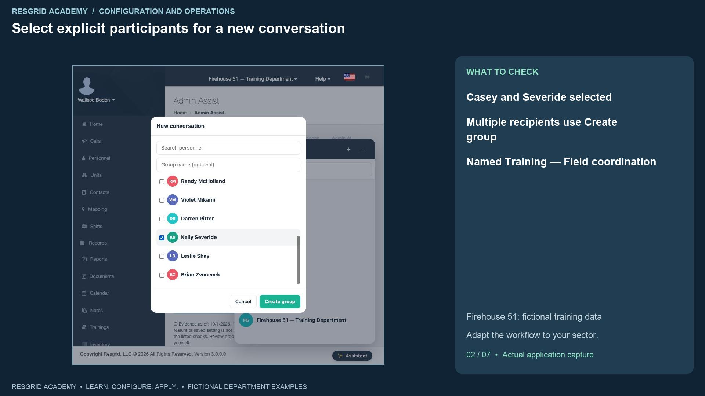
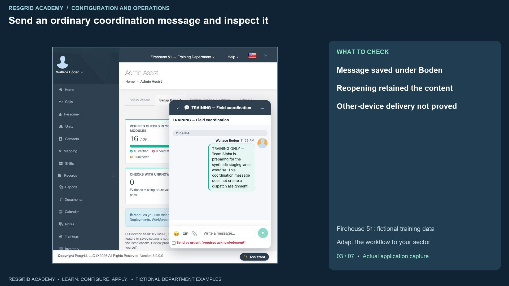
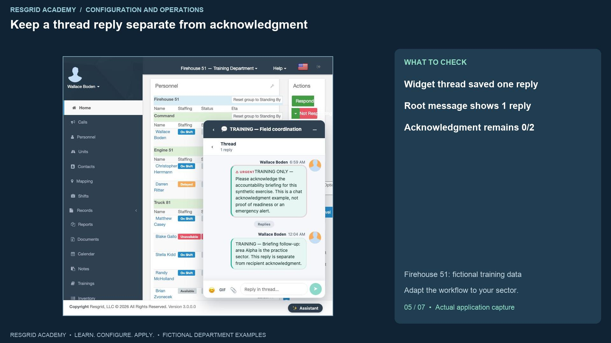
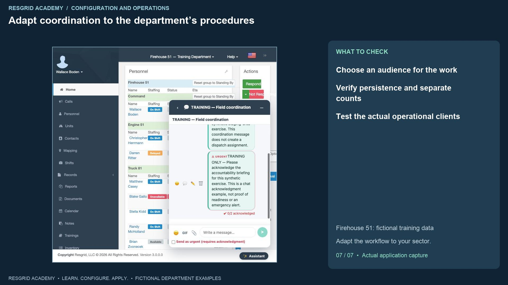

Configuration walkthrough
Use chat channels, messages and acknowledgements
Follow each step, understand its impact, and try the practice exercise with your department.
Step 1
Choose chat for focused team coordination

Read the transcript
Chat keeps a team conversation with its intended participants. Open the Chat button at the bottom of the page where it is available. The widget shows department and group channels, including the synthetic Command and Squad Three groups in our Firehouse fifty-one department. Those names describe our training organization; a search team can use team groups, a security company site groups, a mobile response service operational teams, a wildland contractor crews, and an industrial department facility groups. Review the channel audience before sending. This is separate from the Assistant button, which opens an A I assistance conversation. Chat availability depends on the deployed chat feature and department access. In this lesson the training stack already has it enabled. We do not claim that a learning choice or a module label activates every rollout feature.
Step 2
Select explicit participants for a new conversation

Read the transcript
New conversation opens a member picker. We select only the fictional Matthew Casey and Kelly Severide. With multiple recipients, the action changes to Create group and a name field appears. Enter Training, Field coordination, and create the group. It appears as a conversation with the current sender and the chosen participants. A department-wide channel and an explicitly selected conversation are different audience choices. For a security site, consider whether the whole site group needs the message or only the supervisor and assigned patrol. For mobile response, choose the actual operational team. For search, wildland and industrial response, choose the people coordinating the current assignment. Group creation is not a dispatch assignment and does not change the members’ staffing or unit availability.
Step 3
Send an ordinary coordination message and inspect it

Read the transcript
Enter a concise coordination message. Our synthetic message says Team Alpha is preparing for a staging-area exercise and explicitly separates the message from dispatch. Send message adds it to the conversation with Wallace Boden as sender and a timestamp. Reopening the saved conversation after navigation retains the message. That proves the message was saved and can be read in this view. It does not prove another device received a push or that the participants read it. Emoji, G I F and image controls are visible in the composer; attachments need their own approved content and client test. Keep sensitive personal, clinical, client and facility details within your organization’s approved record and access procedures. A chat conversation is not a substitute for an incident record, a roster declaration or a formal instruction that needs a different workflow.
Step 4
Request acknowledgment and inspect who is pending

Read the transcript
For a message that needs an explicit acknowledgment, select Send as urgent, requires acknowledgment, before sending. Our second message asks the two fictional participants to acknowledge an accountability briefing for this exercise. The result displays U R G E N T and zero of two acknowledged. Expanding the count in the widget shows Matthew Casey pending and Kelly Severide pending. The count describes the expected recipients and recorded acknowledgments for this message. It does not prove operational readiness, completion of an assignment, or independent receipt by a device. Review how your department follows up when someone remains pending. This recording leaves both recipients pending; it does not simulate a recipient’s acknowledgment or claim emergency notification delivery.
Step 5
Keep a thread reply separate from acknowledgment

Read the transcript
Use Reply in thread on the urgent message to keep follow-up with that message. The widget changes to Thread, shows the original message, a Replies area and a composer. We add a synthetic clarification that area Alpha is the practice sector, then send it. The thread now shows one reply. Close thread returns to the main conversation, where the original message has a one-reply button and still shows zero of two acknowledged. A reply does not perform the message’s recipient acknowledgment. The original sender’s follow-up also cannot stand in for either recipient. This distinction is useful when a patrol supervisor clarifies a site instruction, a search leader clarifies a sector, or an industrial coordinator clarifies a facility access point.
Step 6
Verify a reaction and review client limitations
Read the transcript
Add reaction opens the quick reaction choices. We select thumbs-up on the synthetic urgent message. The live view did not immediately show the reaction, so we reload the page and reopen the conversation. The saved result now shows one thumbs-up, one reply and zero of two acknowledged. A reaction is separate from the acknowledgment request. This build also displayed clock values differently for live and freshly fetched messages; verify the display before interpreting timestamps as local chronology. The full chat workspace was opened, but at this normal viewport its message area was compressed and its thread pane was hidden. The widget provided a readable working thread path. This recording uses that observed path and leaves full-workspace layout and other-client verification as follow-up work.
Step 7
Adapt coordination to the department’s procedures

Read the transcript
For community paramedicine and mental health response, coordinate the operational team and handover while maintaining approved record boundaries. For search and rescue, use team and staging conversations, with explicit follow-up for accountability instructions. For security companies, use site and patrol groups with the intended supervisor audience. For wildland contractors, coordinate crew and staging information and review connectivity and fallback procedures. For industrial emergency teams, coordinate facility access, equipment issues and handover with the intended responders. Your practice exercise is to choose a channel audience, create a small synthetic group, send an ordinary message, request acknowledgment, record a focused thread reply and inspect the separate counts. Reopen the conversation to verify persistence. Then test authorized recipients on the actual devices and channels used by your organization, and record what the training demonstration has not proved.
Apply it to your department
- Community paramedicine and mental health response
- Use operational chat for team coordination and handover; keep detailed clinical records in the approved record workflow.
- Search and rescue
- Use team chat for search coordination and logistics; confirm incident assignments separately.
- Security companies and departments
- Use site or patrol chat for low-impact coordination; review recipients before posting client-specific information.
- Wildland contractors
- Use crew chat for staging and logistics; ensure time-critical instructions also follow approved communications procedures.
- Industrial emergency response teams
- Use facility chat for coordination and equipment updates; record defects and incidents in their owning workflows.
Put it into practice
Check your department’s enabled modules, permissions and provider configuration. Save each change on its own screen, review the retained value, and confirm the result with the people and devices that will use it.